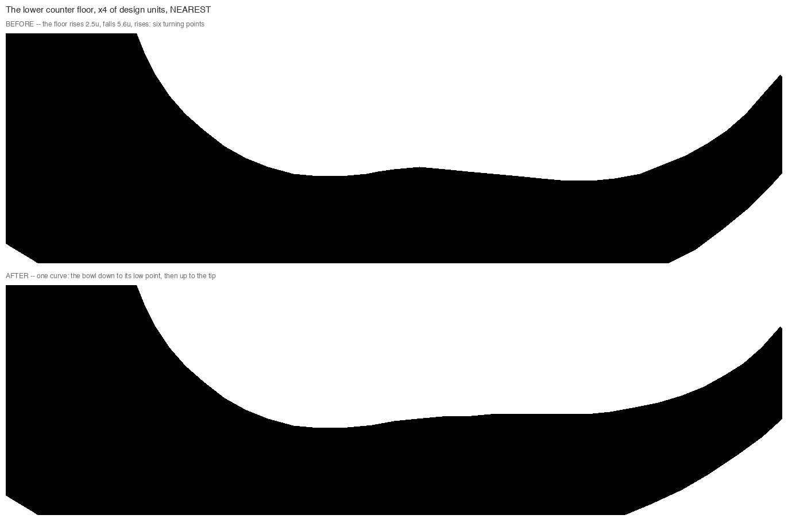
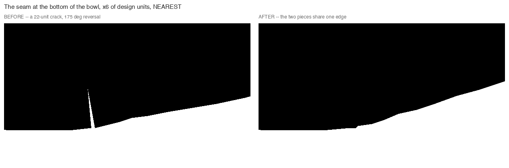
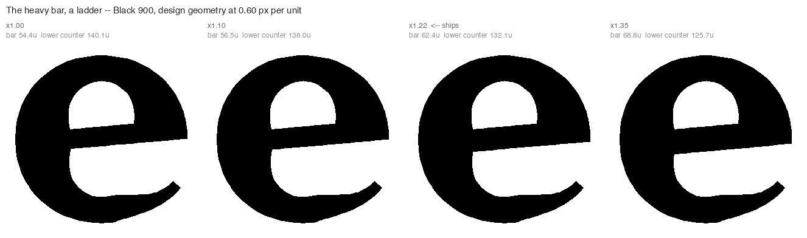
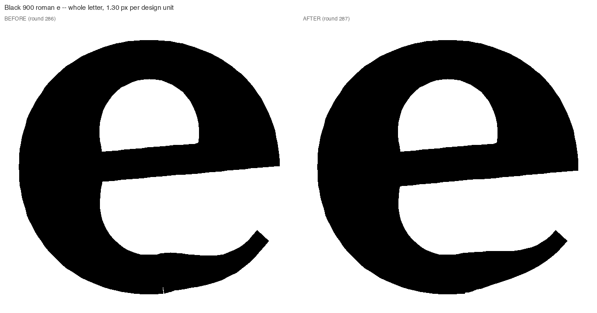
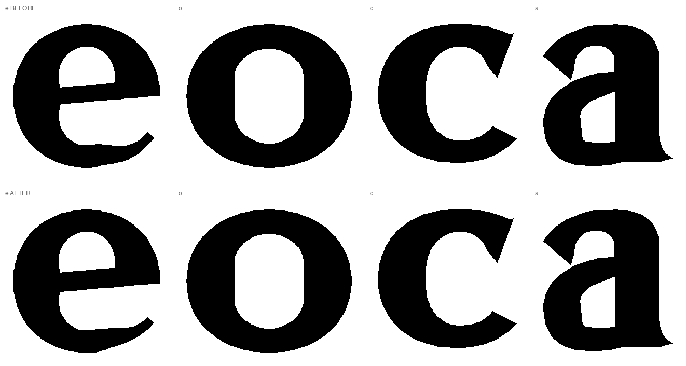
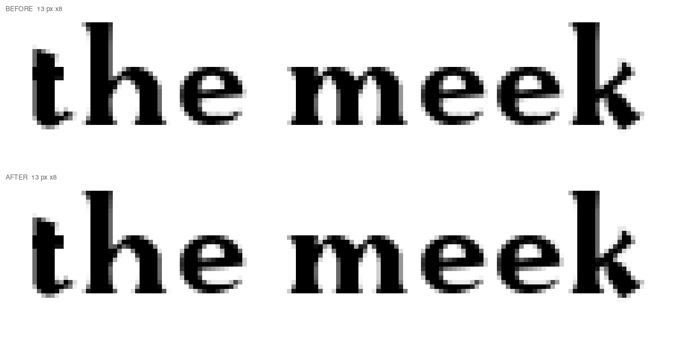
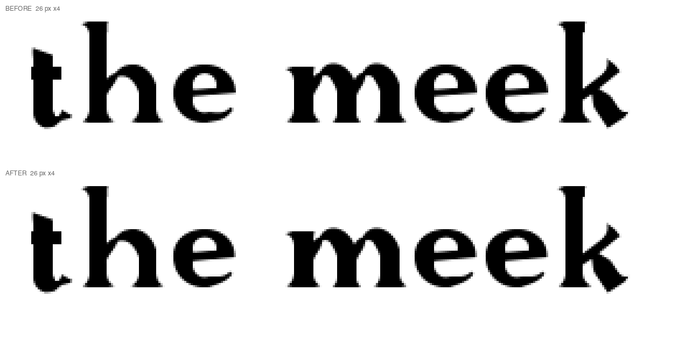

Round 287. “subagent to address to wobble wave and bumps of 900 e”, and “that e could be heavier.” Two separate faults and one weight change, all three gated above a stem of 84 — between the Regular’s 66.9 and the Bold’s 116 — so the ExtraLight, the Regular, the Italic and the Bold Italic are byte-identical. Every figure is PNG at native pixels; each magnification is an integer factor with nearest-neighbor resampling and is stated in its caption.
The tail’s inner edge — the counter floor you read against the white — is one cubic from the bowl’s inner edge out to the tip. Its second control point is pulled back from the tip along the tip’s own direction by 0.55 of the chord, which leaves it at a nearly fixed height: 18.9, 20.3 and 20.5 units at the 400, 700 and 900, because the tip sits at 0.19 of the x-height at every weight and only the chord grows. The point the curve starts from, though, climbs with the pen: 19.3, 41.6, 56.0. At the Regular the two are level and the floor is one curve. At the Black the control sits 35 units below the start, and the curve sags between them.

A separate fault, and older. Round 245 gave the roman tail its inner edge as the drawn curve, starting at the bowl’s own inner point; the ring went on being cut along a different line — the normal of the outer curve that an inner-edge tail no longer draws. Two lines, so the two pieces never met. The gap between them is 3.0 units at the Regular and 9.6 at the Black, and the union left the difference as a crack: a 175-degree reversal 22 units deep, standing up out of the letter’s underside. The ring is now cut on the face the tail actually starts on, so the two pieces share one edge.

| cut | crack, before | crack, after | floor turns, before | floor turns, after |
|---|---|---|---|---|
| ExtraLight 200 | none | none | 1 | 1 |
| Regular 400 | none | none | 1 | 1 |
| Bold 700 | 9.0 u, 174° | none | 2 | 1 |
| Black 900 | 22.0 u, 175° | none | 2 | 1 |
A floor that is one curve falls to the bowl’s low point and rises to the tip: one turning point. Every extra one is a wave. The 200 and the 400 were already clean, which is why they are left alone.
Measured against its own construction family at the 900 — the rounds, o c a b d g p q s, not the case group, which flags the alphabet rather than the drawing — the e’s color is 0.418 against the family median of 0.457, and on the chamfer-ridge stroke median it is 72.3 against 103.5, the lightest of the family. So heavier is a correction, not a departure.
The bar is the lever, and the other two were ruled out rather than passed over. The bowl cannot take it: the e’s ring is the o’s pipeline at the e’s radius, so its pen is the o’s pen at the same tangent by construction. The tail cannot take it either — it is the bottom-right stroke you have twice asked to make lighter, and thickening it would quietly reverse that. The bar is 20% of the letter’s ink. Its top is a ruling of round 39, so it grows downward only: the eye is untouched and the lower counter pays.

| measure | Regular 400 | Bold 700 before | Bold 700 after | Black 900 before | Black 900 after |
|---|---|---|---|---|---|
| bar (units) | 25.9 | 43.2 | 49.5 | 54.4 | 62.4 |
| bar / stem | 0.387 | 0.372 | 0.427 | 0.368 | 0.422 |
| eye height | 160.7 | 138.0 | 138.0 | 123.4 | 123.4 |
| lower counter | 205.9 | 166.1 | 159.8 | 140.1 | 132.1 |
| ink area | 58797 | 93757 | 95781 | 113985 | 116563 |
x1.22 is the largest rung that keeps the lower counter clearly larger than the eye — 132.1 against 123.4 at the Black — while lifting the bar above the Regular’s share of the stem, which is the direction a Black should move. x1.35 makes the two counters equal and x1.50 inverts them. No counter dents at either weight, before or after.




Black 900: 306 glyphs swept, 25 with findings; 5 pairs touching, 6 below the floor, 14 exempt; 0 dents. Bold 700: 306 swept, 23 with findings; 4 touching, 6 below the floor, 14 exempt; 0 dents. All at their baselines. Against round 288, the only glyphs that moved are the e and the composites that carry it — e, ae, oe at the Black, and eacute too at the Bold, where the accent’s x offset rounds one unit differently. No kern pair changed. The ExtraLight, the Regular, the Italic and the Bold Italic are byte-identical: 0 glyphs, 0 GPOS pairs.